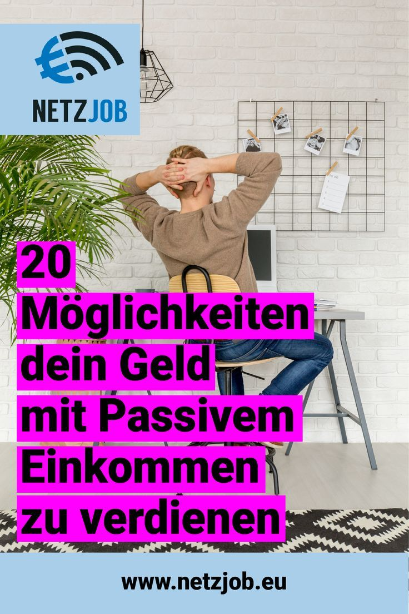

Welcome to Passives einkommen
8 Wege ➔ passives Einkommen ✓ geld verdienen ★ | MoneyJungle
2020.11.28 10:37
Erfolgreich & Vermögend werden Online Geld verdienen mit Spotify? Spotify Business [Anleitung] 3 Schritte zum Erfolg Mintos-Marktplatz Strategien Passives Einkommen verschiedene Anfängerportfolio’s Vermögensaufbau: So wirst du in 11 Schritten reich! 9 Geschäftsideen Bildung 50-30-20-Regel Mehrwert Zinseszins Review’s Amazon Flex Erfahrungen Trade Republic [Review] Robert Kiyosaki Buch [Review] Evergreensystem Gold [Review] Vergleichen & Sparen Versicherung Kfz-Versicherungs-Vergleich Investieren Aktiendepot-Vergleich Tagesgeld Vergleich Festgeld Vergleich Konten Kreditkarten-Vergleich Girokonto Vergleich Kryptowährungen Was ist eigentlich Bitcoin? Über uns
Online Geld verdienen – Moneyjungle
Geld verdienen mit Stil
Passives Einkommen
1Geld verdienen im Schlaf, ohne dafür arbeiten zu gehen. Das klingt fast zu schön um wahr zu sein. Tatsächlich muss das kein Tagtraum bleiben. Es gibt bereits unzählige Erfolgsgeschichten von unterschiedlichsten Menschen. Sie haben uns bewiesen, dass es möglich ist, Geld passiv zu verdienen. Sie haben es geschafft, sich einen oder mehrere passive Einkommensströme aufzubauen. Nach einmaligen Arbeitseinsatz müssen sie sich kaum mehr um ihr Einkommen kümmern, sondern haben Zeit und das nötige Vermögen, um ihre Träume zu verwirklichen. Durch ihre Unabhängigkeit ist es ihnen möglich, die schönsten Orte der Welt zu bereisen und ein sorgenloses Leben zu führen. Auch du kannst das schaffen, vorausgesetzt du hast ein klares Ziel vor Augen, das Durchhaltevermögen, den ehrlichen Willen dieses Ziel zu erreichen und eine gute Strategie. In diesem Artikel zeigen wir dir 8 Möglichkeiten und Ideen, mit denen andere Menschen ihre finanzielle Freiheit erreicht haben und mit denen auch du finanziell unabhängig werden kannst. Über Nacht wirst du bestimmt nicht zum Millionär, aber wenn du es wirklich ernst meinst, kannst du auch in sehr kurzer Zeit finanziell frei werden.
Was ist passives Einkommen überhaupt?
Vielleicht stellst du dir die Frage, was genau denn nun ein passives Einkommen ist. Fachlich wird gerne auch vom passiven Residualeinkommen gesprochen. Laut Wikipedia definiert dieser Begriff sinngemäß einmalige Investitionen oder Arbeitsleistungen, die über einen langen Zeitraum hinweg, regelmäßig und ohne sich widerholenden Arbeitseinsatz, Einnahmen generieren. Diese Definition bietet uns bereits ein gutes Bild, wie passives Einkommen funktionieren kann. Für den Anfang ist es wichtig zu verstehen, dass das gängige Modell “Stundenlohn”, das sich in unserer Gesellschaft etabliert hat, nichts mit passivem Einkommen zu tun hat. Wenn du wirklich zeit- und ortsunabhängig Einkommen erzielen möchtest, musst du lernen wie du dein Einkommen von deiner Arbeitszeit abkoppeln kannst. Lies dir diese und die folgenden Zeilen bitte genauestens durch, denn sie sind essentiell wichtig für deine finanzielle Unabhängigkeit. Verstehe, dass passives Einkommen nicht in Stundensätzen gemessen wird, wie es beim herkömmlichen aktiven Einkommen der Fall ist.
Wikipedia führt als Beispiele hierfür Lizenzen, Patente und Urheberrechte auf. Zu den Spitzenverdienern im Bereich passives Einkommen durch Arbeitsleistung werden Paul McCartney und ABBA genannt, welche durch den Verkauf von Tonträgern und öffentlichen Aufführungen automatisch Einkünfte erzielen. Sie haben sich also vor vielen Jahren ein System geschaffen und verdienen heute noch sehr gut daran – auch wenn sie passiv bleiben.
Heißt das für dich, dass die finanzielle Freiheit nur erreichbar ist, wenn du über eine außerordentliche musikalische Begabung verfügst und dich zusätzlich noch gut vermarkten kannst? Auf keinen Fall! Es gibt unzählige Möglichkeiten, wie du auch ohne besonderes Talent die finanzielle Unabhängigkeit erreichen kannst. In diesem Artikel zeigen wir dir die, unserer Meinung nach, besten Möglichkeiten, wie du dir 2019 und darüber hinaus ein weiteres finanzielles Standbein aufbauen kannst. Mit jeder der hier vorgestellten Methoden haben es bereits viele Menschen geschafft, sich ein hohes passives Einkommen aufzubauen. Bestimmt findest auch du hier einen Weg, der zu dir passt und mit dem auch du das schaffen kannst.
Der große Unterschied
Passives Einkommen entsteht durch Vermögenswerte. Es gibt zwei Möglichkeiten, sich diese durch Investitionen aufzubauen.
Geld investieren
Wenn du über eine entsprechende Rücklage verfügst, hast du die Möglichkeit, dein Geld direkt zu investieren. Du lässt dein Geld für dich arbeiten. Diese Art, um ein passives Einkommen aufzubauen kostet dich weniger Zeit und Anstrengung. Im Gegenzug hast du natürlich ein höheres Risiko und Verlustpotenzial, vor allem, wenn du deine Investments nicht verstehst.
Beispiele für passives Einkommen aus Kapitalinvestments:
• Dividendenaktien
• Real Estate Investment Trusts (REITs)
• Immobilien kaufen und vermieten
• P2P-Kredite
Zeit investieren
Wenn du nicht die Möglichkeit hast, um dir Vermögenswerte zu kaufen, musst du dir diese selbst schaffen. Auch diese Möglichkeit könnten zum Teil mit einem monetären Investment verbunden sein, jedoch ist dieses nur minimal. Der Fokus liegt klar auf deiner investierten Zeit und Arbeit.
Beispiele für passives Einkommen durch Zeit- und Arbeitsinvestments:
• Digitale Infoprodukte erstellen
• Videos auf YouTube hochladen
• T-Shirt Business
• Affiliate-Shop
“Der durchschnittliche Millionär verfügt über 7 verschiedene Einkommensströme.” Je mehr du dich mit dem Thema finanzielle Freiheit befasst, desto häufiger wirst du auf diese Aussage treffen. Eine Strategie, die wir nutzen würden, um vermögend zu werden, können wir dir mit auf den Weg geben: Fange an, dir einen einkommensgenerierenden Vermögenswert zu schaffen nutze das verdiente Geld, um in weitere Vermögenswerte zu investieren. So kannst du dir nach und nach ein Vermögen aufbauen und dir das Leben schaffen, dass du dir wünschst.
8 Wege, um sich ein passives Einkommen aufzubauen
Finanzielle Freiheit bedeutet das zu schaffen, was Anderen in 40 Jahren nicht gelingt. Gleichbedeutend ist auch der Einsatz, den du dafür leisten musst. Lass’ dich nicht von Misserfolgen entmutigen und kämpfe weiter für deine Freiheit. Du kannst es schaffen, davon sind wir überzeugt.
Passives Einkommen durch Kapitalinvestments
Investiere in Dividendenaktien
Wenn es dir um passives Einkommen durch ein Kapitalinvestment geht, solltest du dich auf jeden Fall mit Dividendenaktien beschäftigen. Die Dividende ist der Teil des Gewinns, den eine Aktiengesellschaft an die Aktionäre ausschüttet. Dabei gibt es Unternehmen, die sich auf ihr Wachstum konzentrieren und weniger oder gar keine Dividenden ausschütten und solche, die sich dazu entscheiden einen Großteil ihrer Gewinne in Form von Dividenden auszuschütten. Sogenannte Dividendenaktien sind für dich interessanter, wenn es dir um ein passives Einkommen geht. Bei der Auswahl einer passenden Dividendenaktie solltest du dir die Dividenden und ihr Wachstum der Vergangenheit ansehen. Außerdem solltest du dir Gedanken über die Zukunftsaussichten des Unternehmens machen. Auch die Dividendenrendite ist ein entscheidender Faktor, um die Aktie zu finden, um die du dein Portfolio erweiterst. Setze nicht alles auf ein Pferd! Niemand kann die genaue Zukunft eines Unternehmens voraussagen. Aus diesem Grund ist es sinnvoll, dein Risiko durch Diversifikation zu streuen.
Real Estate Investment Trusts
Sogenannte REITs sind eine gute Möglichkeit, um indirekt und mit wenig Kapital in Immobilien zu investieren. Bei einem Real Estate Investment Trust handelt es sich um eine börsennotierte Aktiengesellschaft, deren Haupttätigkeit in der Haltung und Bewirtschaftung von Immobilien bestehen. Sie sind verpflichtet, mindestens 90 Prozent ihres ausschüttbaren Gewinns an die Aktionäre auszuschütten. Das macht sie automatisch zu Dividendentiteln. Außerdem sind REITs steuerbegünstigt, was sie definitiv zu einer interessanten Anlagemöglichkeit machen.
Immobilien kaufen und vermieten
Der Kauf und die anschließende Vermietung einer Immobilie ist ein klassisches Beispiel für passives Einkommen. Durch Fremdfinanzierung lassen sich hier außerordentliche Renditen erzielen, welche natürlich mit einem erhöhten Risiko einhergehen. Der Kapitalaufwand hier ist recht hoch. Deshalb solltest du dich vor dem Kauf deiner ersten Immobilie stark mit dem Thema beschäftigen. Wenn du weißt, worauf es ankommt kannst du im Grunde loslegen. Es gibt immer eine gute Gelegenheit für ein Immobilieninvestment – du musst sie nur noch finden. Vielleicht wird in deiner Umgebung ja in nächster Zeit ein gutes Renditeobjekt versteigert.
P2P Kredite
Wenn es um passives Einkommen geht stellen auch P2P Kredite eine gute Anlagemöglichkeit dar. Peer-to-Peer Kredite konnten sich in den letzten Jahren immer weiter etablieren. Nicht zuletzt liegt das an den starken Renditen, die Anleger in den letzten Jahren einfahren konnten. Menschen, die bei einer Bank keinen Kredit bekommen würden, haben die Möglichkeit sich Geld über eigens dafür erstellten Plattformen zu leihen. Durch Zinszahlungen kannst du hier ein passives Einkommen aufbauen. Du kannst dein Kapital über mehrere Plattformen auf viele verschiedene Kreditnehmer aufteilen. So kannst du dein Risiko klein halten und dir ein solides passives Einkommen schaffen.
Passives Einkommen durch Arbeits- und Zeitinvestments
Digitale Infoprodukte erstellen
Wenn du dich mit einem Thema gut auskennst und Anderen etwas darüber beibringen kannst, erfüllst du eine gute Voraussetzung, um ein eigenes digitales Infoprodukt zu erstellen. Du kannst dein Wissen zum Beispiel in Form eines E-Books oder eines mehrteiligen Videokurses verewigen. Anschließen lädst du dein Infoprodukt auf eine Plattform hoch und kannst passiv daran verdienen. Vielleicht ist dein erster Versuch noch nicht dein Durchbruch, aber wenn du dran bleibst und dich weiter mit dem Thema beschäftigst, kannst du einen echten Volltreffer landen. Ein gutes Infoprodukt ist sehr langlebig, das heißt du kannst über einen sehr langen Zeitraum daran profitieren. Beispiele hierfür wären ein Kochkurs für vegane Ernährung, ein 7-Wochen-Abnehmprogramm oder eine Videoreihe in der du die Grundlagen der Physik anhand von praktischen Beispielen erklärst. Jeder ist in der Lage, ein gutes digitales Infoprodukt zu erstellen und damit Geld zu verdienen. Such’ dir ein spannendes Thema aus, informiere dich darüber und fang an, dir ein passives Einkommen aufzubauen.
Videos auf YouTube hochladen
Mit YouTube Videos lässt sich sehr viel Geld verdienen. Über 4 Milliarden Videos werden täglich auf YouTube aufgerufen. Hier steckt eine Menge Potenzial, das du für dich nutzen kannst. Du musst dafür nicht das Glück haben und den großen viralen Hit landen. Im Grunde reicht es schon, konstant und über einen längeren Zeitraum hinweg unterhaltende oder informative Videos hochzuladen. Lerne zunächst, wie du unterhaltende oder informative Videos in hoher Qualität produzieren kannst. Das kannst du von Videos über Rhetorik und Tutorials über Videobearbeitung lernen. Als nächstes bringst du dir bei, wie Networking funktioniert und beschäftigst dich mit Social Media, um mehr Zuschauer und damit potentielle Abonnenten auf dich aufmerksam zu machen. So kannst du relativ schnell wachsen und dich auf die Monetarisierung deines YouTube Kanals konzentrieren. Durch Produktplatzierungen und Werbeeinnahmen kannst du dir ein solides passives Einkommen aufbauen. Vermeide den Anfängerfehler, die Qualität deines Contents unter der Monetarisierung deines Kanals leiden zu lassen. Auch wenn du kurzfristig viel Geld verdienen kannst, zahlt sich das in den seltensten Fällen aus. Denke langfristig: Wirklich gute Videos generieren über Jahre hinweg solide Einnahmen für dich. Solltest du dich für einen eigenen YouTube Kanal entscheiden erwartet dich zunächst viel Arbeit, die sich erst im Laufe der Zeit auszahlen wird. Lass’ dich davon nicht entmutigen. Halte dir dein Ziel immer vor Augen und bleib’ am Ball! Nimm Kritik positiv auf und versuche deine Videos immer weiter zu verbessern.
T-Shirt-Business
Im Internet finden sich viele Plattformen, mit deren Hilfe du dir ein erfolgreiches T-Shirt-Business aufbauen kannst. Du erstellst dabei ein cooles Design und lädst es hoch. Kunden der Plattformen entdecken deine Produkte und können diese bestellen. Vorteilhaft hierbei ist der geringe Aufwand für dich: Die Plattform wickelt die Kaufaufträge von der Produktion bis zum Versand ab und du erhältst einen Teil des Gewinns. Wenn du erfolgreich bist, kannst du den Arbeitsaufwand komplett outsourcen. Das bedeutet, du beschäftigst einen oder mehrere Designer und jemanden, der die Designs in deinem Namen hochlädt. Je mehr Designs du zu verschiedenen Themen hochgeladen hast, desto mehr kannst du natürlich daran verdienen. Ein gutes Design verkauft sich immer wieder und du kannst dich an deinem passiven Einkommen erfreuen.
Affiliate-Shop
Wenn du dich ein wenig mit Webdesign und SEO beschäftigst, kannst du dir einen eigenen Affiliate-Shop aufbauen. Das ist gar nicht so schwer und wenn du es richtig machst, kannst du damit sehr gut passiv Geld verdienen. Auf der Website zeigst du mehrere Produkte, die du mit Affiliate-Links hinterlegst. Für jeden Kauf, der über einen deiner Links getätigt wird, erhältst du im Anschluss eine Provision. Für den Kunden macht es dabei keinen preislichen Unterschied, welcher Link ihn zu Produkt führt. Win-Win für alle Beteiligten! Natürlich solltest du sicherstellen, dass du nur gute Produkte verlinkst. Du willst mit deiner Website natürlich Fehlkäufe vermeiden und deinen Besuchern einen Mehrwert bieten. Tipp: Affiliate Links findest du in vielen Online-Shops. Sieh’ dich einfach ein wenig um. Natürlich kannst du auch nur Amazon-Partner-Links verwenden, aber um deinen Kunden ein wenig mehr Auswahl zu bieten, ist es sinnvoll, verschiedene Online-Shops zu verlinken. Nur weil du kein Partnerprogramm auf einer Website findest, bedeutet das nicht, dass keines existiert. Schreib’ Online-Shops, die du gut findest an und frage einfach nach, ob diese mittels Affiliate-Links mit dir kooperieren möchten.
Du siehst: Der Aufbau eines passiven Einkommensstroms ist kein Hexenwerk. Zu Beginn ist es aber vor allem harte Arbeit. Lass’ dich nicht entmutigen, wenn du in den ersten Wochen noch keine Einnahmen erzielen kannst. Bilde dich weiter und sei immer offen für neue Möglichkeiten. Vielleicht bist du ein Projekt falsch angegangen und hast Fehler gemacht, aber gib’ nicht auf. Lerne aus deinen Fehlschlägen und mach’s nächstes Mal besser. Gehe neue Wege und mach weiter, dann klappt’s bestimmt irgendwann. Der größtmögliche Fehler ist gar nicht anzufangen.
Wir hoffen, dass du hier fündig geworden bist und wünschen viel Erfolg beim Umsetzen.
-MoneyJungle-
1 Written by Till Stephan - 9. Juli 2020 - 885 Views Tags | Geld verdienen , passives EinkommenYou Might Also Like
Amazon Flex Erfahrungen: Lohnt sich der Job? + 11 Tipps
9. Juli 2020No Comment
Please Post Your Comments & Reviews
Antworten abbrechen
Previous Post Next Post Hinweis
In keinem Fall sollten Informationen aus diesem Blog als Ersatz für eine professionelle Finanzberatung verwendet werden.
Unterstütze werden
Become a Patron!Newsletter
© 2019 - 2020, moneyjungle.de. All rights reserved.
Lies das noch kurz!
Sieh dir noch kurz unseren Aktiendepot-Vergleich an, dass ist dein schnellster Weg in die finanzielle Freiheit. Wieso? Ganz einfach: Du erfährst alles, was du über das richtige Depot wissen musst und welche Vorteile du noch nicht kennst!!! MoneyJungle
Danke!
